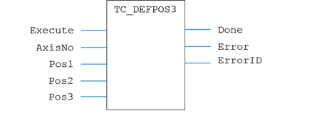
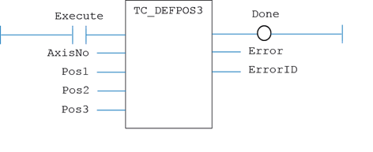

Motion Function
Applies a new DEFPOS request for three axes specified by 'AxisNo'.
|
Execute : BOOL; |
Rising edge requests execution |
|
AxisNo : USINT; |
Axis number |
|
Pos1 : LREAL; |
Position value to be applied to first axis |
|
Pos2 : LREAL; |
Position value to be applied to second axis |
|
Pos3 : LREAL; |
Position value to be applied to third axis |
|
Done : BOOL; |
TRUE when function has completed normally |
|
Error : BOOL; |
TRUE if a program error is detected |
|
ErrorID : UINT; |
Returned error number |
When the Execute input changes from FALSE to TRUE (rising edge), the function block issues the command for execution in the velocity profile software. The values in Pos1, Pos2 and Pos3 are applied to the axes starting at AxisNo.
A programming error, such as parameter out of range, will set the Error output and return an error ID number. For the Error ID reference, see the Trio Programming error list.
MyTC_Defpos3(Execute, AxisNo, Pos1, Pos2, Pos3);
Done := MyTC_Defpos3.Done;
Error := MyTC_Defpos3.Error;
ErrorID := MyTC_Defpos3.ErrorID;

